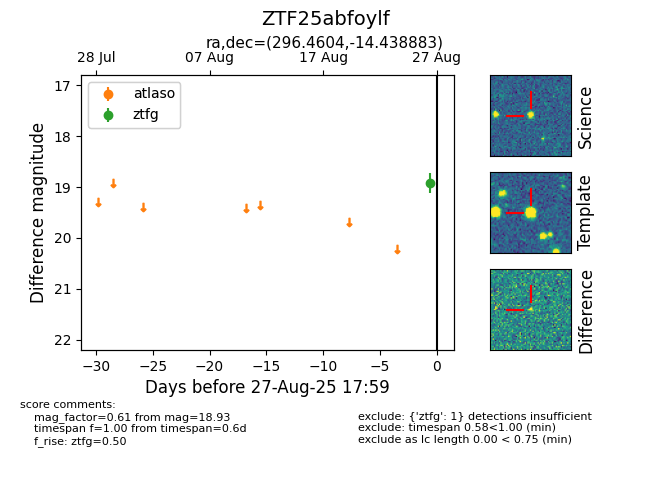

FINK: ZTF25abfoylf
Lasair: ZTF25abfoylf
ALeRCE: ZTF25abfoylf
ZTF25abfoylf (ztf,fink)
equatorial (ra, dec) = (296.4604,-14.43888)
galactic (l, b) = (25.7819,-18.44384)

last ztfg=18.93
1 ztfg detections